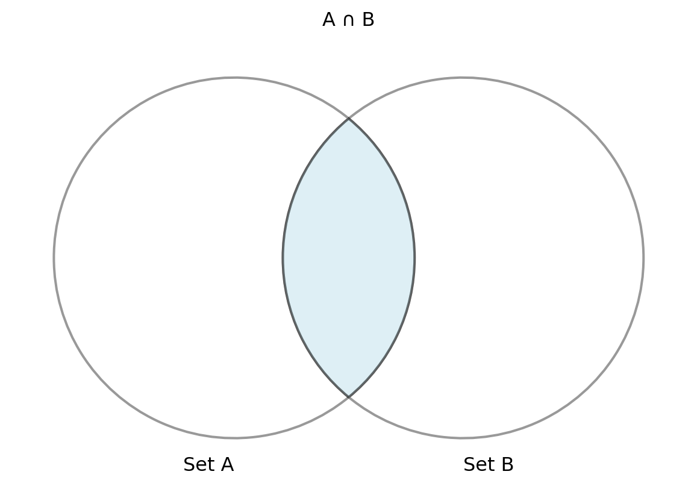
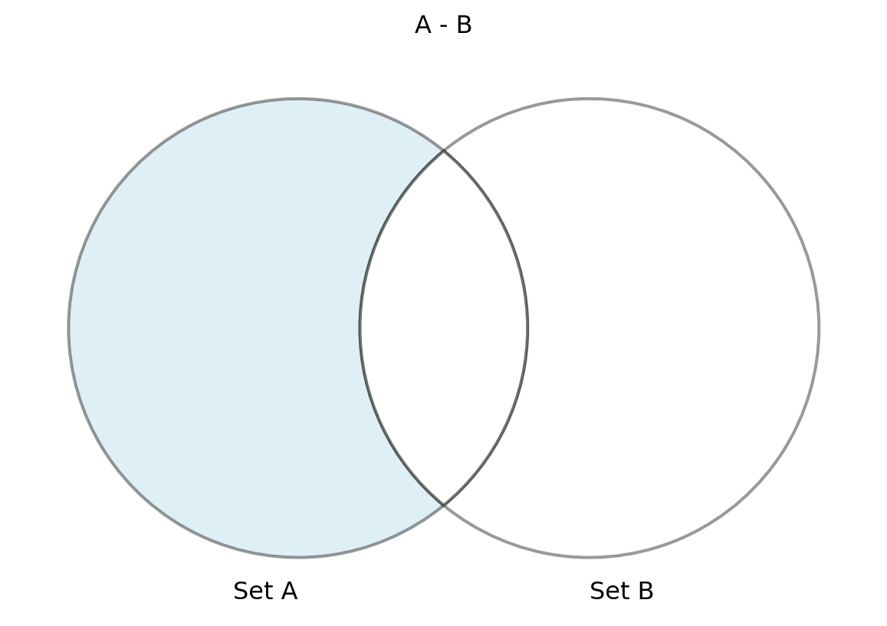

gantt
dateFormat M/DD/YYYY
axisFormat %W
section
Week 5 : crit, weekblock, 2/4/2024, 1w
section Topics
ER Models : m1, 1/7/2024, 3w
Rel. Algebra: m4, after m1, 2w
Normal forms: m5, after m4, 3w
SQL : m6, after m5, 4w
Adv. SQL: m7, after m6, 5w
Relational Algebra 2
Lecture 8
Wednesday - Sep 18, 2024
Housekeeping
Discussion items
| Module | Week | Date | Day | Lectures | Deliverables/Notes |
|---|---|---|---|---|---|
| Relational Alg. | 5 | 9/18 | Wed | MTG8: L8 (Relational Algebra 2) | |
| Relational Alg. | 5 | 9/20 | Fri | PrjDel 6 due (Team reflection) | |
| Relational Alg. | 5 | 9/22 | Sun | HW3 due (Relational Algebra Study Guide) | |
| Normal forms | 6 | 9/23 | Mon | MTG9: L9 (Relational Algebra 3) | Quiz 3 due (Relational Algebra) |
| Normal forms | 6 | 9/25 | Wed | MTG10: L10 (Analysis and Normal Forms 1) | Career Fair (10am-3pm) |
| Normal forms | 6 | 9/26 | Thu | Interview Day (10am-3pm) | |
| Normal forms | 7 | 9/30 | Mon | MTG11: L11 (Analysis and Normal Forms 2) | |
| Normal forms | 7 | 10/2 | Wed | MTG12: L12 (Analysis and Normal Forms 3) |
You are here
Set Operations
Introduction to Set Theory and Relational Algebra
Set theory is a fundamental concept in relational algebra, providing the basis for operations that manipulate relations. These operations enable combining and filtering data effectively in relational databases.
- Set theory deals with the mathematical concept of sets, collections of distinct elements.
- Relational algebra applies set theory to relations (tables) in databases.
- Common operations include union, intersection, difference, and Cartesian product.
- These operations allow manipulation of data across multiple relations.
- Set operations are performed on relations that have the same schema.

Set theory is essential for understanding how relational algebra manipulates and combines relations.
Intersection Operation in Relational Algebra
The intersection operation retrieves rows that are common to two relations. It is used to find data that appears in both relations, making it useful when comparing datasets or finding shared entries between relations.
∩ - Intersection
- Intersection finds common tuples between two relations.
- The result includes only those tuples that appear in both relations.
- Denoted as Relation1 ∩ Relation2
- It’s a binary operation, meaning it operates on two relations.
- Both relations must be union-compatible, meaning they have the same set of attributes and data types.
- Intersection is often used in conjunction with other set-based operations like union and difference.

Examples
Given two relations Students(ID,Name,Major) and Registered(ID,Name,Major),
The following are valid examples of the \(\cap\) in unicode:
Students ∩ Registered
Courses ∩ OfferedCourses
Employees ∩ Managers
Intersection is useful for finding commonality between two sets of data in relational databases.
Properties of the Intersection Operator
Definition
\[ R_1 \cap R_2 = { t \mid t \in R_1 \text{ and } t \in R_2 } \]
- where \(t\) is a row (tuple),
- \(R_1\) and \(R_2\) are relations (tables) with the same attributes,
- The intersection operation returns a new relation containing only the rows that are present in both \(R_1\) and \(R_2\),
- The result consists of distinct rows that satisfy the condition of being in both relations.
Properties
- Idempotent – Applying the intersection of a relation with itself doesn’t change the result:
\[ R \cap R = R \]
- Commutative – The order of relations in an intersection operation doesn’t matter:
\[ R_1 \cap R_2 = R_2 \cap R_1 \]
- Associative – The grouping of intersection operations doesn’t affect the result:
\[ (R_1 \cap R_2) \cap R_3 = R_1 \cap (R_2 \cap R_3) \]
- Intersection with an empty set – The intersection of a relation with an empty set is the empty set:
\[ R \cap \emptyset = \emptyset \]
- Intersection distributes over union – The intersection of two relations distributes over their union:
\[ R_1 \cap (R_2 \cup R_3) = (R_1 \cap R_2) \cup (R_1 \cap R_3) \]
Explanation of properties
- Idempotent: Combining a relation with itself using intersection does not remove any rows, so the result remains the same.
- Commutative: The order of the relations in the intersection operation does not affect the result.
- Associative: You can group intersection operations in any way, and the result will be the same.
- Intersection with an empty set: Intersecting with an empty relation results in an empty set because no rows can be in both the original relation and an empty set.
- Distributed: Intersection distributes over union, meaning you can break down or combine intersections in a structured way over unions.
Intersection - ∩ - Example 1
Given Courses1( Course,Term):
| Course | Term |
|---|---|
| CMSC301 | Fall 2024 |
| CMSC408 | Fall 2024 |
| CMSC408 | Fall 2023 |
and Courses2( Course,Term ):
| Course | Term |
|---|---|
| CMSC110 | Fall 2024 |
| CMSC201 | Fall 2024 |
| CMSC475 | Fall 2023 |
| CMSC408 | Fall 2024 |
Courses1 \(\cap\) Courses2 returns:
| Course | Term |
|---|---|
| CMSC408 | Fall 2024 |
Difference in Relational Algebra
Difference in relational algebra subtracts one relation from another, returning the rows that are present in the first relation but not the second.
- The difference operation returns tuples that are in one relation but not in the other.
- It is often used to filter out unwanted data from a larger dataset.
- The relations must have the same schema for the difference operation to be valid.
- This operation can help isolate unique data points in a relation.
- The result is a relation that includes only the data exclusive to the first set.

Difference is a powerful tool for excluding data from one relation that is present in another.
Properties of the Difference Operator
Definition
\[ R_1 - R_2 = { t \mid t \in R_1 \text{ and } t \notin R_2 } \]
- where \(t\) is a row (tuple),
- \(R_1\) and \(R_2\) are relations (tables) with the same attributes,
- The difference operation returns a new relation containing only the rows that are in \(R_1\) but not in \(R_2\),
- The result consists of distinct rows that exist in \(R_1\) and are absent from \(R_2\).
Properties
- Non-commutative – The order of relations in the difference operation matters:
\[ R_1 - R_2 \neq R_2 - R_1 \]
- Not associative – Grouping difference operations affects the result:
\[ (R_1 - R_2) - R_3 \neq R_1 - (R_2 - R_3) \]
- Difference with an empty set – The difference between a relation and an empty set is the relation itself:
\[ R_1 - \emptyset = R_1 \]
- Difference with itself – The difference between a relation and itself is the empty set:
\[ R_1 - R_1 = \emptyset \]
- Distributive over intersection – The difference operation distributes over intersection:
\[ R_1 - (R_2 \cap R_3) = (R_1 - R_2) \cap (R_1 - R_3) \]
Explanation of properties
- Non-commutative: The order in which the relations are used in the difference matters because the result will include rows from \(R_1\) that are not in \(R_2\), but not vice versa.
- Not associative: The grouping of relations in a difference operation affects the outcome since subtracting another relation later changes the rows that remain.
- Difference with an empty set: Subtracting an empty set from a relation has no effect since there are no rows to remove.
- Difference with itself: Subtracting a relation from itself results in an empty set, as no rows are left.
- Distributive over intersection: Difference distributes over intersection, allowing you to apply the difference to both parts of the intersection separately and then take their intersection.
Difference - \(-\) - Example 1
Given Courses1( Course,Term):
| Course | Term |
|---|---|
| CMSC301 | Fall 2024 |
| CMSC408 | Fall 2024 |
| CMSC408 | Fall 2023 |
and Courses2( Course,Term ):
| Course | Term |
|---|---|
| CMSC110 | Fall 2024 |
| CMSC201 | Fall 2024 |
| CMSC475 | Fall 2023 |
| CMSC408 | Fall 2024 |
Courses1 \(-\) Courses2 returns:
| Course | Term |
|---|---|
| CMSC301 | Fall 2024 |
| CMSC408 | Fall 2023 |
Difference - \(-\) - Example 2
Given Courses1( Course,Term):
| Course | Term |
|---|---|
| CMSC301 | Fall 2024 |
| CMSC408 | Fall 2024 |
| CMSC408 | Fall 2023 |
and Courses2( Course,Term ):
| Course | Term |
|---|---|
| CMSC110 | Fall 2024 |
| CMSC201 | Fall 2024 |
| CMSC475 | Fall 2023 |
| CMSC408 | Fall 2024 |
Courses2 \(-\) Courses1 returns:
| Course | Term |
|---|---|
| CMSC110 | Fall 2024 |
| CMSC201 | Fall 2024 |
| CMSC475 | Fall 2023 |
Combining Relations Using Set Operations
Set operations allow the combination of multiple relations in a variety of ways, depending on the desired outcome of the query.
- Relational algebra supports various set operations like union, intersection, and difference.
- These operations allow filtering and merging data across relations.
- Set operations are only valid when the schemas of the involved relations match.
- Use cases include combining multiple tables, finding common data, or filtering out specific records.
- Understanding these operations is key to effective data manipulation in relational databases.
Set operations provide flexible tools for combining and comparing datasets in relational databases.
Set Operation Requirements and Considerations
When performing set operations, it’s essential to ensure that both relations have compatible schemas and understand how each operation behaves.
- Set operations can only be performed on relations with identical schemas.
- The number of attributes and their types must match for the operation to succeed.
- Set operations can return large results, depending on the size of the input relations.
- Performance considerations include the size of relations and efficiency of the operation.
- Proper indexing can improve the speed of set operations in large databases.
Understanding the requirements of set operations ensures successful and efficient data manipulation.
Examples of Set Operations in Relational Queries
Relational algebra operations like union, intersection, and difference can be directly applied in database queries to filter and combine data.
- Example: Union of two employee tables to combine employee records from two departments.
- Example: Intersection of student and graduate tables to find students who have graduated.
- Example: Difference between a product catalog and inventory to find out-of-stock items.
- Cartesian product used to combine customer and order tables for further analysis.
- Practical queries often combine set operations with other relational algebra operations.
Set operations are applied in real-world scenarios to efficiently manipulate and query data.
Set Operations in Real-World Databases
Set operations play a vital role in real-world databases, helping manage and analyze large datasets effectively.
- Used to merge large datasets across departments or organizations.
- Helpful in financial reporting, where records from different periods or regions are combined.
- Set operations can aid in data cleaning by removing duplicates or irrelevant records.
- They are fundamental in multi-relational databases where data is distributed across tables.
- Often used in cloud environments for large-scale data analysis and processing.
In practice, set operations streamline data integration and analysis across various industries.
Summary of Set Operations in Relational Algebra
Set operations, including union, intersection, difference, and Cartesian product, are key tools in relational algebra for manipulating and combining relations. They enable powerful queries that form the basis of relational database functionality.
- Set theory provides the foundation for combining and filtering relations.
- Intersection finds common records, while difference filters out data from one relation.
- Cartesian product creates all possible combinations of tuples from two relations.
- Union merges two relations, removing duplicates.
- These operations are essential for querying and managing relational databases.
Mastery of set operations in relational algebra allows for complex and efficient database queries.
Join Operations
Introduction to Join Operations in Relational Algebra
Join operations allow you to combine data from two or more relations based on a condition. Understanding these operations is key to querying relational databases effectively.
- Joins combine related data from different relations.
- A condition (join predicate) specifies how to match tuples from different relations.
- Common types of joins include inner and outer joins.
- Joins are fundamental to multi-relation queries.
- Different types of joins solve different query requirements.
Joins are essential in connecting data from multiple tables in relational databases.
Inner Join: Definition and Use
Inner join is the most common type of join, which only returns matching tuples from both relations. It is frequently used in relational databases.
- Inner join retrieves only the matching tuples from two relations.
- Non-matching tuples are excluded from the result.
- The join condition specifies how tuples are matched.
- Useful when you need to combine data from two relations where all entries meet a condition.
- Most common join operation in SQL and relational algebra.
Inner join is ideal when you only need rows where data exists in both relations.
Properties of the Inner Join Operator
Definition
\[ R_1 \bowtie_{condition} R_2 = { t_1 , t_2 \mid t_1 \in R_1, t_2 \in R_2, \text{ and } condition(t_1, t_2) } \]
- where \(t_1\) is a row (tuple) from relation \(R_1\),
- \(t_2\) is a row (tuple) from relation \(R_2\),
- The inner join combines rows from \(R_1\) and \(R_2\) based on a specified join condition,
- The result contains only those rows where the condition is true for both relations (i.e., rows in \(R_1\) and \(R_2\) that satisfy the join condition).
Properties
- Non-commutative – The order of relations matters in inner join (unless the join condition is symmetric):
\[ R_1 \bowtie_{condition} R_2 \neq R_2 \bowtie_{condition} R_1 \] (Unless \(condition(t_1, t_2) = condition(t_2, t_1)\))
- Associative – Grouping inner join operations doesn’t affect the result:
\[ (R_1 \bowtie_{condition1} R_2) \bowtie_{condition2} R_3 = R_1 \bowtie_{condition1} (R_2 \bowtie_{condition2} R_3) \]
- Inner join with an empty set – The inner join with an empty relation results in an empty set:
\[ R_1 \bowtie_{condition} \emptyset = \emptyset \]
- Distributive over selection – Inner join distributes over selection:
\[ \sigma_{condition}(R_1 \bowtie R_2) = (\sigma_{condition}(R_1)) \bowtie R_2 \] (if the selection condition applies to \(R_1\) only)
- Size of result – The number of rows in the result depends on how many rows from \(R_1\) match rows in \(R_2\) under the join condition.
Explanation of properties
- Non-commutative: The order of the relations in the inner join may affect the result unless the join condition is symmetric (e.g., \(A = B\) is the same as \(B = A\)).
- Associative: Grouping inner joins differently doesn’t change the result as long as the conditions are applied consistently.
- Inner join with an empty set: If either relation is empty, the result is an empty set because no rows can satisfy the join condition.
- Distributive over selection: You can first apply a selection condition to one of the relations and then join it with the other relation without affecting the outcome, assuming the selection condition applies to that relation only.
- Size of result: The size of the result is determined by the number of matching rows in \(R_1\) and \(R_2\) that satisfy the join condition.
This structure mirrors the other relational algebra operations and highlights the key properties of the inner join.
Inner Join - ⋈ - Example 1
Given Students(VID,Name,Major):
| VID | Name | Major |
|---|---|---|
| V10101 | Alice | CS |
| V10102 | Bob | Math |
| V10103 | Carol | CS |
| V10104 | Dave | Physics |
and Enrollments(VID,Course,Term,Enrl):
| VID | Course | Term | Enrl |
|---|---|---|---|
| V10101 | CMSC460 | Spring 2024 | 100 |
| V10103 | CMSC455 | Spring 2024 | 150 |
| V10105 | CMSC420 | Spring 2024 | 120 |
Find all the data for students enrolled in classes
Students ⋈ (VID) Enrollments;
| VID | Name | Major | Course | Term | Enrl |
|---|---|---|---|---|---|
| V10101 | Alice | CS | CMSC460 | Spring 2024 | 100 |
| V10103 | Carol | CS | CMSC455 | Spring 2024 | 150 |
This list does not include students who don’t have enrollments, nor enrollments with students not found in the relation.
What is the cardinality and participation?
Inner Join - ⋈ - Example 2
Given Menu(DishID, Dish, Price):
| DishID | Dish | Price |
|---|---|---|
| D001 | Samosa | 2.5 |
| D002 | Butter Chicken | 10.0 |
| D003 | Naan | 1.5 |
| D004 | Paneer Tikka | 8.0 |
and Orders(OrderID, DishID, Quantity):
| OrderID | DishID | Quantity |
|---|---|---|
| O1001 | D001 | 2 |
| O1002 | D003 | 3 |
| O1003 | D005 | 1 |
Menu ⋈ (DishID) Orders returns:
| DishID | Dish | Price | OrderID | Quantity |
|---|---|---|---|---|
| D001 | Samosa | 2.5 | O1001 | 2 |
| D003 | Naan | 1.5 | O1002 | 3 |
This example demonstrates how an inner join will return only the dishes from the orders that exist in the menu, leaving out any ordered dishes that are not on the menu (like DishID: D005).
Outer Join: Introduction and Types
Outer join returns all tuples from one or both relations, filling in missing values with NULLs. It allows for more inclusive queries.
- Outer join returns matching and non-matching tuples.
- NULL values are used for missing data.
- There are three types: left, right, and full outer join.
- Left outer join returns all tuples from the left relation and matches from the right.
- Right outer join does the reverse: all from the right relation and matches from the left.
Outer joins are useful when you need to retain non-matching data from one or both relations.
Properties of the Outer Join Operator
Definition
\[ \begin{aligned} R_1 \text{⟕}_{condition} R_2 = &{ t_1 , t_2 \mid (t_1 \in R_1 \text{ and } t_2 \in R_2 \text{ and } condition(t_1, t_2)) } \ &\cup { t_1 \mid t_1 \in R_1 \text{ and no match in } R_2 } \ &\cup { t_2 \mid t_2 \in R_2 \text{ and no match in } R_1 } \end{aligned} \]
- where \(t_1\) is a row (tuple) from relation \(R_1\),
- \(t_2\) is a row (tuple) from relation \(R_2\),
- The outer join combines rows from \(R_1\) and \(R_2\) based on a specified join condition,
- Unlike the inner join, the result includes all matching rows from both relations as well as non-matching rows, which are padded with
NULLvalues where no match is found.
Types of outer join:
- Left outer join: Keeps all rows from \(R_1\) and matches from \(R_2\).
- Right outer join: Keeps all rows from \(R_2\) and matches from \(R_1\).
- Full outer join: Keeps all rows from both \(R_1\) and \(R_2\), including unmatched rows from both sides.
Properties
- Non-commutative – The order of relations matters for left and right outer joins:
\[ R_1 \text{⟕}_{condition} R_2 \neq R_2 \text{⟕}_{condition} R_1 \] (unless using a full outer join)
- Associative – Grouping outer joins can depend on the type of join but generally holds true for full outer joins:
\[ (R_1 \text{⟕}_{condition1} R_2) \text{⟕}_{condition2} R_3 = R_1 \text{⟕}_{condition1} (R_2 \text{⟕}_{condition2} R_3) \] (applies to full outer joins)
Outer join with an empty set – The outer join with an empty relation depends on the type of outer join:
- Left outer join: Returns all rows from \(R_1\) with
NULLfor \(R_2\):
\[ R_1 \text{⟕} \emptyset = R_1 \]
- Right outer join: Returns all rows from \(R_2\) with
NULLfor \(R_1\):
\[ \emptyset \text{⟕} R_2 = R_2 \]
- Full outer join: Results in both relations with unmatched rows being padded with
NULL:
\[ R_1 \text{⟕} \emptyset = R_1 \quad \text{and} \quad \emptyset \text{⟕} R_2 = R_2 \]
- Left outer join: Returns all rows from \(R_1\) with
Distributive over selection – Outer join is not generally distributive over selection, as selection might remove rows that would otherwise be included with
NULLvalues.
Explanation of properties
- Non-commutative: The order of relations in left and right outer joins affects the result, but for full outer joins, the order does not matter.
- Associative: Full outer joins are associative, meaning you can group them in different ways and still get the same result.
- Outer join with an empty set: In left and right outer joins, the non-empty relation is returned with
NULLvalues in place of the missing relation. For full outer joins, both relations contribute to the result, filling unmatched rows withNULL. - Distributive over selection: Unlike the inner join, selection does not distribute cleanly over outer joins because rows with
NULLvalues might be incorrectly excluded if the selection is applied beforehand.
Left Outer Join - ⟕ - Example
Given Menu(DishID, Dish, Price):
| DishID | Dish | Price |
|---|---|---|
| A001 | Spring Roll | 5.0 |
| A002 | Pad Thai | 12.0 |
| A003 | Sushi | 10.0 |
| A004 | Ramen | 8.0 |
and Orders(OrderID, DishID, Quantity):
| OrderID | DishID | Quantity |
|---|---|---|
| O2001 | A001 | 1 |
| O2002 | A003 | 2 |
| O2003 | A005 | 1 |
Menu ⟕ Orders on DishID returns:
| DishID | Dish | Price | OrderID | Quantity |
|---|---|---|---|---|
| A001 | Spring Roll | 5.0 | O2001 | 1.0 |
| A002 | Pad Thai | 12.0 | NaN | NaN |
| A003 | Sushi | 10.0 | O2002 | 2.0 |
| A004 | Ramen | 8.0 | NaN | NaN |
This example shows how a left outer join includes all rows from the left table (Menu), and the matching rows from the right table (Orders). If there is no match, NULL (or NaN in pandas) values are returned for the columns from the right table. Here, the DishID: A005 from the Orders table does not exist in the Menu, so it is not included in the result, but all menu items are shown, regardless of whether they are ordered.
Right Outer Join - ⟖ - Example
Given Menu(DishID, Dish, Price):
| DishID | Dish | Price |
|---|---|---|
| A001 | Spring Roll | 5.0 |
| A002 | Pad Thai | 12.0 |
| A003 | Sushi | 10.0 |
| A004 | Ramen | 8.0 |
and Orders(OrderID, DishID, Quantity):
| OrderID | DishID | Quantity |
|---|---|---|
| O2001 | A001 | 1 |
| O2002 | A003 | 2 |
| O2003 | A005 | 1 |
Menu ⟖ Orders on DishID returns:
| DishID | Dish | Price | OrderID | Quantity |
|---|---|---|---|---|
| A001 | Spring Roll | 5.0 | O2001 | 1 |
| A003 | Sushi | 10.0 | O2002 | 2 |
| A005 | NaN | NaN | O2003 | 1 |
This example demonstrates how a right outer join includes all rows from the right table (Orders), and the matching rows from the left table (Menu). If there is no match, NULL (or NaN in pandas) values are returned for the columns from the left table. Here, the DishID: A005 from the Orders table does not exist in the Menu, so its corresponding Dish and Price columns have NaN values, but all orders are shown, even if the dish is not found on the menu.
Full Outer Join: Combining Data
Full outer join returns all tuples from both relations, filling missing values with NULLs. It is the most inclusive join operation.
- Full outer join returns all rows from both relations.
- Non-matching rows from both sides are included.
- Missing values are filled with NULLs for unmatched tuples.
- This join is used when you need a complete set of data from both relations.
- A powerful operation when analyzing two datasets with partial overlap.
Full outer join helps combine datasets completely, even if some data is missing.
Properties of the Full Outer Join Operator
Definition
\[ \begin{aligned} R_1 \text{⟗}_{condition} R_2 = &{ t_1 , t_2 \mid t_1 \in R_1 \text{ and } t_2 \in R_2 \text{ and } condition(t_1, t_2) } \ &\cup { t_1 \mid t_1 \in R_1 \text{ and no match in } R_2 } \ &\cup { t_2 \mid t_2 \in R_2 \text{ and no match in } R_1 } \end{aligned} \]
- where \(t_1\) is a row (tuple) from relation \(R_1\),
- \(t_2\) is a row (tuple) from relation \(R_2\),
- The full outer join combines rows from \(R_1\) and \(R_2\) based on a specified join condition,
- The result includes:
- Rows where the join condition holds for both relations (matching rows),
- Rows from \(R_1\) with no matching rows in \(R_2\) (padded with
NULLvalues), - Rows from \(R_2\) with no matching rows in \(R_1\) (padded with
NULLvalues).
Properties
- Commutative – The order of relations in a full outer join does not affect the result:
\[ R_1 \text{⟗}_{condition} R_2 = R_2 \text{⟗}_{condition} R_1 \]
- Associative – Grouping full outer join operations does not affect the result:
\[ (R_1 \text{⟗}_{condition1} R_2) \text{⟗}_{condition2} R_3 = R_1 \text{⟗}_{condition1} (R_2 \text{⟗}_{condition2} R_3) \]
- Full outer join with an empty set – The full outer join with an empty relation includes all rows from the non-empty relation, padded with
NULLvalues for the other side:
\[ R_1 \text{⟗} \emptyset = R_1 \quad \text{(padded with `NULL` for } R_2\text{)} \]
\[ \emptyset \text{⟗} R_2 = R_2 \quad \text{(padded with `NULL` for } R_1\text{)} \]
- Distributive over union – The full outer join is distributive over union:
\[ R_1 \text{⟗} (R_2 \cup R_3) = (R_1 \text{⟗} R_2) \cup (R_1 \text{⟗} R_3) \]
- Size of result – The size of the result is at most the sum of the rows in both relations, since all rows from both \(R_1\) and \(R_2\) are included, with unmatched rows padded with
NULL.
Explanation of properties
- Commutative: The order in which the relations are combined in a full outer join does not matter, as the result includes all rows from both relations.
- Associative: Grouping full outer joins differently does not affect the result, allowing the operation to be applied in stages.
- Full outer join with an empty set: If either relation is empty, the result includes all rows from the non-empty relation, with the other side padded with
NULL. - Distributive over union: Full outer join distributes over union, meaning you can break the join into smaller unions and join them separately.
- Size of result: The result contains all rows from both relations, so the number of rows is at most the sum of rows in \(R_1\) and \(R_2\), with
NULLvalues used for non-matching rows.
Here’s an example using a soccer team to demonstrate a Full Outer Join:
Full Outer Join - ⋈ - Example
Given Players(PlayerID, PlayerName, Position):
| PlayerID | PlayerName | Position |
|---|---|---|
| P001 | John | Forward |
| P002 | Alex | Midfielder |
| P003 | Max | Defender |
| P004 | Luke | Goalkeeper |
and Teams(TeamID, PlayerID, TeamName):
| TeamID | PlayerID | TeamName |
|---|---|---|
| T001 | P001 | Tigers |
| T002 | P003 | Lions |
| T003 | P005 | Bears |
| T004 | P006 | Wolves |
Players ⋈ Teams on PlayerID returns:
| PlayerID | PlayerName | Position | TeamID | TeamName |
|---|---|---|---|---|
| P001 | John | Forward | T001 | Tigers |
| P002 | Alex | Midfielder | NaN | NaN |
| P003 | Max | Defender | T002 | Lions |
| P004 | Luke | Goalkeeper | NaN | NaN |
| P005 | NaN | NaN | T003 | Bears |
| P006 | NaN | NaN | T004 | Wolves |
This example demonstrates how a full outer join combines all rows from both tables (Players and Teams), with matches being displayed where available. If a player does not belong to a team or a team does not have a listed player, NULL (or NaN in pandas) values are filled in for missing information. For example, players P005 and P006 exist only in the Teams table, and players P002 and P004 exist only in the Players table. The full outer join will include all records from both tables.
Here’s another example using cameras and images to demonstrate a Full Outer Join:
Full Outer Join - ⋈ - Example
Given Cameras(CameraID, CameraModel, LensType):
| CameraID | CameraModel | LensType |
|---|---|---|
| C001 | Canon EOS | 50mm |
| C002 | Nikon D3500 | 18-55mm |
| C003 | Sony Alpha | 35mm |
| C004 | Fujifilm XT3 | 24-70mm |
and Images(ImageID, CameraID, ImageDescription):
| ImageID | CameraID | ImageDescription |
|---|---|---|
| I001 | C001 | Landscape |
| I002 | C003 | Portrait |
| I003 | C005 | Macro |
| I004 | C006 | Night Sky |
Cameras ⋈ (CameraID) Images returns:
| CameraID | CameraModel | LensType | ImageID | ImageDescription |
|---|---|---|---|---|
| C001 | Canon EOS | 50mm | I001 | Landscape |
| C002 | Nikon D3500 | 18-55mm | NaN | NaN |
| C003 | Sony Alpha | 35mm | I002 | Portrait |
| C004 | Fujifilm XT3 | 24-70mm | NaN | NaN |
| C005 | NaN | NaN | I003 | Macro |
| C006 | NaN | NaN | I004 | Night Sky |
This full outer join combines all rows from both the Cameras and Images tables. Where there is a matching CameraID, the corresponding camera and image details are shown. For unmatched CameraIDs (such as C005 and C006 from the Images table and C002 and C004 from the Cameras table), NULL (or NaN) values fill in the missing data. This query provides a complete view of all cameras and all images, regardless of whether they have a match in the other table.
Natural Join: Definition and Application
A natural join automatically matches attributes with the same name in both relations, simplifying queries when attribute names align.
- Natural join matches tuples based on attributes with the same name.
- No explicit join condition is needed.
- Automatically merges common columns.
- Useful when attribute names are consistent across relations.
- Simplifies queries by eliminating the need for specifying the join condition.
Natural join is a convenient way to join relations when common attribute names are used.
Properties of the Natural Join Operator
Definition
\[ R_1 \bowtie R_2 = { t_1 , t_2 \mid t_1 \in R_1, t_2 \in R_2, \text{ and for all common attributes } A, t_1\[A\] = t_2\[A\] } \]
- where \(t_1\) is a row (tuple) from relation \(R_1\),
- \(t_2\) is a row (tuple) from relation \(R_2\),
- The natural join operation joins two relations based on all attributes they have in common, combining rows where the values of the common attributes are equal,
- The result contains only the attributes from \(R_1\) and \(R_2\), but common attributes appear only once.
Properties
- Commutative – The order of relations in a natural join does not affect the result:
\[ R_1 \bowtie R_2 = R_2 \bowtie R_1 \]
- Associative – Grouping natural join operations does not affect the result:
\[ (R_1 \bowtie R_2) \bowtie R_3 = R_1 \bowtie (R_2 \bowtie R_3) \]
- Natural join with an empty set – The natural join with an empty relation results in an empty set:
\[ R_1 \bowtie \emptyset = \emptyset \]
- Natural join distributes over selection – The natural join distributes over selection operations when the selection condition involves attributes from one of the relations:
\[ \sigma_{condition}(R_1 \bowtie R_2) = \sigma_{condition}(R_1) \bowtie R_2 \] (if the selection condition applies to attributes of \(R_1\) only)
- Size of result – The size of the result depends on how many rows in \(R_1\) and \(R_2\) match based on the values of the common attributes.
Explanation of properties
- Commutative: The order of relations in the natural join does not matter, as the result includes matching rows from both relations based on their common attributes.
- Associative: Grouping natural joins differently does not affect the result, allowing the operation to be applied in stages.
- Natural join with an empty set: If either relation is empty, the result will also be empty, as there are no rows to match.
- Natural join distributes over selection: You can apply a selection condition to one relation before performing the natural join without affecting the outcome, provided the condition applies only to attributes from that relation.
- Size of result: The result includes all rows from both relations where the values of common attributes match, and the number of matching rows determines the size of the result.
Here’s an example using a Natural Join with a kennel and dog data set.
Natural Join Example
Given Dogs(DogID, Name, Breed, Age):
| DogID | Name | Breed | Age |
|---|---|---|---|
| D101 | Buddy | Labrador | 3 |
| D102 | Bella | Beagle | 4 |
| D103 | Charlie | Poodle | 2 |
| D104 | Lucy | Bulldog | 5 |
and Kennels(DogID, KennelID, ArrivalDate):
| DogID | KennelID | ArrivalDate |
|---|---|---|
| D101 | K001 | 2024-01-10 |
| D103 | K002 | 2024-02-15 |
| D105 | K003 | 2024-03-20 |
Dogs \(\bowtie\) Kennels on DogID returns:
| DogID | Name | Breed | Age | KennelID | ArrivalDate |
|---|---|---|---|---|---|
| D101 | Buddy | Labrador | 3 | K001 | 2024-01-10 |
| D103 | Charlie | Poodle | 2 | K002 | 2024-02-15 |
In a Natural Join, the join is based on columns with the same name and automatically combines rows with matching values in those columns. In this case, both tables have the column DogID, so a natural join combines the dogs and kennels data where DogID matches. Only the dogs with a corresponding kennel entry (DogID: D101 and D103) are included in the result, while unmatched dogs and kennels are excluded.
Natural Join - Example with Two Overlapping Columns
Given Buses(BusID, Route, Capacity, DriverID):
| BusID | Route | Capacity | DriverID |
|---|---|---|---|
| B001 | 101 | 50 | D001 |
| B002 | 102 | 45 | D002 |
| B003 | 103 | 60 | D003 |
| B004 | 104 | 40 | D004 |
and Passengers(PassengerID, BusID, DriverID, Seat):
| PassengerID | BusID | DriverID | Seat |
|---|---|---|---|
| P101 | B001 | D001 | 12 |
| P102 | B003 | D003 | 18 |
| P103 | B002 | D002 | 9 |
| P104 | B005 | D006 | 5 |
Buses \(\bowtie\) Passengers on BusID and DriverID returns:
| BusID | Route | Capacity | DriverID | PassengerID | Seat |
|---|---|---|---|---|---|
| B001 | 101 | 50 | D001 | P101 | 12 |
| B002 | 102 | 45 | D002 | P103 | 9 |
| B003 | 103 | 60 | D003 | P102 | 18 |
In this Natural Join, we are joining on two columns that both tables have in common: BusID and DriverID. The join automatically combines rows where both the BusID and DriverID match. This natural join will return only rows where both the bus and passenger data have matching BusID and DriverID. In this case, it will exclude any buses or passengers where these two columns do not match simultaneously.
Theta Join: Flexibility with Conditions
Theta join allows the use of arbitrary conditions to combine relations, offering flexibility beyond just equality conditions.
- Theta join applies a condition other than equality to combine relations.
- The condition can be any comparison operator (e.g., <, >, =).
- More flexible than natural or inner joins.
- Useful when a relationship between tuples is based on non-equality conditions.
- Examples include finding tuples where one attribute is greater than another.
Theta join provides flexibility in combining relations using complex conditions.
Properties of the Theta Join Operator
Definition
\[ R_1 \bowtie_{\theta} R_2 = { t_1 , t_2 \mid t_1 \in R_1, t_2 \in R_2, \text{ and } \theta(t_1, t_2) = \text{true} } \]
- where \(t_1\) is a row (tuple) from relation \(R_1\),
- \(t_2\) is a row (tuple) from relation \(R_2\),
- \(\theta\) is a predicate (condition) that can be any comparison expression involving the attributes of \(R_1\) and \(R_2\), such as \(=, \neq, \<, >, \leq, \geq\),
- The theta join combines rows from \(R_1\) and \(R_2\) where the condition \(\theta\) holds true for both relations.
Properties
- Non-commutative – The order of relations in a theta join matters (unless the predicate is symmetric):
\[ R_1 \bowtie_{\theta} R_2 \neq R_2 \bowtie_{\theta} R_1 \] (unless \(\theta(t_1, t_2) = \theta(t_2, t_1)\))
- Associative – Grouping theta join operations depends on the predicates but generally holds true:
\[ (R_1 \bowtie_{\theta_1} R_2) \bowtie_{\theta_2} R_3 = R_1 \bowtie_{\theta_1} (R_2 \bowtie_{\theta_2} R_3) \] (if the conditions \(\theta_1\) and \(\theta_2\) are consistent)
- Theta join with an empty set – The theta join with an empty relation results in an empty set:
\[ R_1 \bowtie_{\theta} \emptyset = \emptyset \]
- Theta join distributes over selection – The theta join distributes over selection when the selection condition involves only attributes from one of the relations:
\[ \sigma_{condition}(R_1 \bowtie_{\theta} R_2) = \sigma_{condition}(R_1) \bowtie_{\theta} R_2 \] (if the selection condition applies to attributes of \(R_1\) only)
- Size of result – The size of the result depends on how many rows in \(R_1\) and \(R_2\) satisfy the predicate \(\theta\).
Explanation of properties
- Non-commutative: The order of relations in the theta join matters unless the predicate \(\theta\) is symmetric, meaning \(R_1 \bowtie_{\theta} R_2\) will not necessarily equal \(R_2 \bowtie_{\theta} R_1\).
- Associative: Grouping theta joins with different predicates can affect the result, but when consistent conditions are applied, associativity holds.
- Theta join with an empty set: If either relation is empty, the result of the theta join is empty because there are no rows to compare.
- Theta join distributes over selection: You can apply a selection condition to one relation before performing the theta join without affecting the result, provided the selection applies only to that relation.
- Size of result: The number of rows in the result depends on how many rows from \(R_1\) and \(R_2\) satisfy the condition \(\theta\).
This structure mirrors the format of previous relational algebra operations, focusing on the flexibility and behavior of the theta join, where any comparison operator can be used in the join condition.
Here’s an example of a Theta Join using an authors and books model. In this case, the Theta Join will be based on a condition, such as comparing the number of books an author has written to a certain threshold.
Theta Join Example
Given Authors(AuthorID, AuthorName, BooksWritten):
| AuthorID | AuthorName | BooksWritten |
|---|---|---|
| A001 | Alice | 5 |
| A002 | Bob | 2 |
| A003 | Charlie | 8 |
| A004 | Diana | 3 |
and Books(BookID, AuthorID, Title):
| BookID | AuthorID | Title |
|---|---|---|
| B001 | A001 | Data Science 101 |
| B002 | A002 | Math Fundamentals |
| B003 | A003 | Advanced Python |
| B004 | A003 | Machine Learning |
Authors ⨝ θ Books where BooksWritten > 3:
| AuthorID | AuthorName | BooksWritten | BookID | Title |
|---|---|---|---|---|
| A001 | Alice | 5 | B001 | Data Science 101 |
| A003 | Charlie | 8 | B003 | Advanced Python |
| A003 | Charlie | 8 | B004 | Machine Learning |
In this Theta Join, we apply a condition (BooksWritten > 3) to filter the authors, then join the result with the Books table on the common column AuthorID. This example only includes authors who have written more than 3 books and returns their associated books.
Here’s another example of a Theta Join using a video game store and video game model. This Theta Join will be based on a condition, such as comparing the price of video games to a certain threshold.
Theta Join Example 2
Given Stores(StoreID, StoreName, Location):
| StoreID | StoreName | Location |
|---|---|---|
| S001 | Game Galaxy | Downtown |
| S002 | Retro Station | Suburbs |
| S003 | Pixel Paradise | City Center |
and Games(GameID, StoreID, GameTitle, Price):
| GameID | StoreID | GameTitle | Price |
|---|---|---|---|
| G001 | S001 | Super Smash | 60 |
| G002 | S001 | Zelda Quest | 50 |
| G003 | S002 | Mario Kart | 55 |
| G004 | S003 | Fortnite | 20 |
Stores ⨝ θ (Price > 50) Games return :
| StoreID | StoreName | Location | GameID | GameTitle | Price |
|---|---|---|---|---|---|
| S001 | Game Galaxy | Downtown | G001 | Super Smash | 60 |
| S002 | Retro Station | Suburbs | G003 | Mario Kart | 55 |
In this Theta Join, we apply a condition (Price > 50) to filter the video games, then join the result with the Stores table on the common column StoreID. This example only includes games that are priced above $50 and returns the store details for those games.
For instance, only games like Super Smash and Mario Kart will be included in the result, along with the corresponding stores. Games priced $50 or below (like Fortnite) are excluded from the result.
Use Cases: Inner Join
Inner join is commonly used in scenarios where you only need matching data from two relations. It’s ideal for combining related data.
- Frequently used when matching foreign keys with primary keys.
- Example: retrieving student records with matching course registrations.
- Ideal for filtering data to include only relevant, connected records.
- Used when non-matching data is not important for the query.
- Popular in most applications like finance, HR, and inventory systems.
Inner join is ideal when you only care about related records from two relations.
Use Cases: Left and Right Outer Joins
Outer joins are useful when you want to keep all records from one side, even if they don’t have a match in the other relation.
- Left outer join is often used in master-detail relationships.
- Example: retrieving all customers and their orders, including customers without orders.
- Right outer join can be used when focusing on all records from a detail table.
- Used when incomplete data is acceptable, such as optional relationships.
- Often used in customer management systems to track unfilled orders.
Left and right outer joins are valuable when you need non-matching data from one side.
Use Cases: Full Outer Join
Full outer join is used in scenarios where you need to retain all data, even if some entries don’t match. This join is comprehensive.
- Often used in data integration tasks.
- Example: merging two datasets where both may contain unmatched records.
- Used in scenarios like combining employee records from different departments.
- Useful in data warehousing and analytics to ensure no data is lost.
- Common in reconciling data from different sources with partial overlap.
Full outer join ensures no data is lost when combining two relations with missing matches.
Combining Joins for Complex Queries
Different join types can be combined to solve complex queries involving multiple relations. This is often used in real-world database systems.
- Inner and outer joins can be combined in complex queries.
- Example: joining multiple relations with inner joins, then an outer join to fill gaps.
- Different join types solve different parts of the same query.
- Used in multi-table queries for comprehensive data retrieval.
- Often seen in reporting systems that need complete data coverage.
Combining join operations allows complex queries that satisfy multiple data needs.
Renaming and Division
Renaming in Relational Algebra
Renaming allows the assignment of new names to relations or attributes, making complex queries easier to understand. This operation helps avoid ambiguities, especially in self-joins or when handling multiple relations.
- Renaming provides a way to assign new names to relations and their attributes.
- The
ρ(rho) operator is used for renaming in relational algebra. - Syntax:
ρ(new_name(old_name))for renaming relations. - Renaming is essential when performing self-joins to avoid confusion.
- It allows for clearer queries when dealing with complex or long attribute names.
Renaming enhances clarity in query design, especially when handling multiple relations.
Here’s the definition and properties of the renaming operation in relational algebra, formatted similarly to the template you provided:
Properties of the Renaming Operator
Definition
\[ \rho_{new_name}(R) = { t \mid t \in R } \]
- where \(R\) is a relation (table),
- \(new_name\) is the new name assigned to relation \(R\) or one or more of its attributes,
- The renaming operation is used to assign a new name to either the entire relation or to individual attributes in the relation, preserving the structure and data,
- It allows us to avoid ambiguity in cases where relations have overlapping attribute names or when working with complex queries.
The renaming operation can be used in three forms:
- Renaming the entire relation: \(\rho_{S}(R)\) renames relation \(R\) to \(S\),
- Renaming attributes: \(\rho_{(A_1 \rightarrow B_1, A_2 \rightarrow B_2, \dots)}(R)\) renames the attributes \(A_1, A_2, \dots\) in \(R\) to \(B_1, B_2, \dots\),
- Renaming both the relation and its attributes: \(\rho_{S(A_1 \rightarrow B_1, A_2 \rightarrow B_2, \dots)}(R)\).
Properties
- Idempotent – Renaming a relation or attribute multiple times with the same name does not change the result:
\[ \rho_{new_name}(\rho_{new_name}(R)) = \rho_{new_name}(R) \]
- Non-commutative – The order of renaming different attributes matters:
\[ \rho_{(A \rightarrow B)}(\rho_{(B \rightarrow C)}(R)) \neq \rho_{(B \rightarrow C)}(\rho_{(A \rightarrow B)}(R)) \]
- Associative – Renaming operations can be grouped without affecting the result:
\[ \rho_{new_name_1}(\rho_{new_name_2}(R)) = \rho_{new_name_2}(\rho_{new_name_1}(R)) \]
- Renaming with an empty set – Renaming an empty relation still results in an empty set:
\[ \rho_{new_name}(\emptyset) = \emptyset \]
- Renaming preserves all rows and attributes – The renaming operation only changes names and does not affect the content or structure of the relation:
\[ |R| = |\rho_{new_name}(R)| \]
Explanation of properties
- Idempotent: Renaming a relation or attribute multiple times with the same name has no additional effect.
- Non-commutative: The order in which you rename attributes matters, especially if the renaming involves the same attribute multiple times.
- Associative: Renaming operations can be applied in any order, provided they refer to different attributes or relation names.
- Renaming with an empty set: If the relation is empty, renaming it will still result in an empty relation.
- Renaming preserves all rows and attributes: The renaming operation only affects the labels of relations and attributes, not their content or structure, so the number of rows and attributes remains unchanged.
Example of Renaming in Queries
Renaming becomes critical when performing operations like joins, ensuring that attribute names are distinct. This slide provides a simple renaming example to illustrate its importance.
- Example:
ρ(S(Age -> StudentAge))renames the attributeAgetoStudentAgein relationS. - Used to avoid name clashes during operations such as joins.
- Provides a way to clarify attribute roles in a query.
- Enables more readable queries in complex databases.
- Essential when working with relations that have identical attribute names.
Renaming is a flexible tool for improving query readability and structure.
Introduction to Division in Relational Algebra
Division is a specialized relational operation used to retrieve tuples that match all combinations of a related set. It is particularly useful when you need to find records related to every value in another relation.
- Division is used to query for entities that are related to all values in a subset.
- The operation works on two relations: a dividend and a divisor.
- It returns tuples from the dividend that are associated with all tuples in the divisor.
- Typically used in “all” queries, such as “students enrolled in all courses.”
- Not as common as basic operations but vital in certain query types.
Division is a powerful but specific operation that allows querying for “all related” records.
Properties of the Division Operator
Definition
\[ R_1 \div R_2 = { t_1 \mid t_1 \in \pi_{A}(R_1) \text{ and for every } t_2 \in R_2, (t_1, t_2) \in R_1 } \]
- where \(R_1\) is a relation with attributes \(A \cup B\),
- \(R_2\) is a relation with attributes \(B\) (a subset of \(R_1\)’s attributes),
- The division operation returns a new relation consisting of the values of \(A\) from \(R_1\) that match every tuple in \(R_2\),
- Essentially, division finds the tuples in \(R_1\) that have a corresponding match for every tuple in \(R_2\).
Properties
- Not commutative – The order of relations in the division operation matters:
\[ R_1 \div R_2 \neq R_2 \div R_1 \]
- Non-associative – Division is not associative:
\[ (R_1 \div R_2) \div R_3 \neq R_1 \div (R_2 \div R_3) \]
- Division with an empty set – If \(R_2\) is an empty set, the division result is the projection of \(R_1\) on \(A\):
\[ R_1 \div \emptyset = \pi_{A}(R_1) \]
- Division with itself – Dividing a relation by itself results in an empty set unless \(R_2\) contains only tuples present in \(R_1\):
\[ R_1 \div R_1 = \emptyset \quad \text{(if } R_1 \text{ and } R_2 \text{ are identical and non-empty)} \]
- Division with a superset – If \(R_2\) is a superset of \(B\)-values in \(R_1\), the result is empty:
\[ R_1 \div R_2 = \emptyset \quad \text{(if } \pi_B(R_2) \not\subseteq \pi_B(R_1)) \]
Explanation:
- Not commutative: The order of relations in the division operation matters, as dividing one relation by another is not symmetric.
- Non-associative: Division is not associative, meaning that the order in which you perform multiple division operations can affect the result.
- Division with an empty set: If \(R_2\) is empty, the result is the projection of \(R_1\) on \(A\), as no conditions exist for \(B\) attributes.
- Division with itself: Dividing a relation by itself typically results in an empty set unless all tuples from \(R_2\) are in \(R_1\).
- Division with a superset: If \(R_2\) contains values that don’t appear in \(R_1\), the result is empty since no \(A\)-values in \(R_1\) satisfy the matching condition for all tuples in \(R_2\).
Division: Syntax and Example
Division can be represented using the / operator between two relations. Understanding how this operator works in practice will help you apply it correctly.
- Syntax:
R / SwhereRis the dividend andSis the divisor. - Example: Find students enrolled in all mandatory courses:
StudentCourses / MandatoryCourses. - Involves projecting attributes from
Rthat do not appear inS. - Often paired with set difference to exclude unwanted tuples.
- Typically used when one relation defines a subset of another relation’s attributes.
The division operator retrieves records that match a complete set of conditions across relations.
Here’s the division relational operator example using the template format you provided earlier:
Division - ÷ - Example
Given Customers(CustomerID, DishID):
| CustomerID | DishID |
|---|---|
| C001 | D001 |
| C001 | D002 |
| C002 | D001 |
| C002 | D002 |
| C002 | D003 |
| C003 | D001 |
and DimSum(DishID, DishName):
| DishID | DishName |
|---|---|
| D001 | Siu Mai |
| D002 | Har Gow |
| D003 | Char Siu Bao |
Find the customers who have ordered all dim sum dishes:
| CustomerID |
|---|
| C002 |
This query performs a division operation to find customers who have ordered all the dim sum dishes listed in the DimSum table. The result shows only those customers (in this case, CustomerID: C002) who have ordered all available dishes.
- The
CustomerIDof the customer(s) who ordered every dim sum dish (from theDimSumtable) will be displayed.
Practical Use Case for Division
Division is especially useful in scenarios where a tuple needs to be related to all tuples in another relation, such as students attending all classes or employees assigned to all projects.
- Example: “Find suppliers who supply all products in a given category.”
- Applicable in situations where completeness across multiple related attributes is required.
- Helps with queries involving all relationships between a set of tuples.
- Simplifies queries that would otherwise require multiple joins or nested operations.
- Especially common in constraint-related queries, such as project assignments.
Division is ideal for scenarios where a record must meet all criteria in a related set.
Common Mistakes with Division
Although powerful, division can be misused or misunderstood, particularly in situations where its requirements aren’t fully met. This slide highlights common pitfalls to avoid.
- Confusing division with joins, especially in multi-relation queries.
- Forgetting that all tuples in the divisor must match for a result to be returned.
- Misinterpreting the need for completeness across tuples in both relations.
- Using division in cases where a simple join would suffice.
- Failing to project the correct attributes before performing the operation.
Avoid these common errors to ensure the correct application of division in your queries.
Renaming and Division in Query Design
Combining renaming and division can lead to highly readable, efficient queries. This slide demonstrates how these operations complement each other in practice.
- Renaming helps clarify relations and attributes before applying division.
- Avoids ambiguity when the same attributes are present in both relations.
- Ensures that division works on correctly named attributes.
- Improves readability of queries, especially in complex database structures.
- Example:
ρ(StudentCourses/AllCourses)can clarify query intent and results.
Renaming can simplify and clarify the application of division in query design.
Limitations of Division in Relational Algebra
Division, while useful, has limitations and is not appropriate for all query types. Understanding these constraints will help avoid unnecessary complexity in queries.
- Division requires exact matching across relations, which may not be flexible enough for some queries.
- Not suitable for situations where partial matches are acceptable.
- Can be less intuitive than other relational operations like join or projection.
- Often difficult to optimize in large databases due to its complexity.
- Sometimes requires preprocessing or additional operations to work effectively.
Division is powerful but limited by its strict requirements for matching across relations.
Alternatives to Division
In cases where division is not the best fit, other relational operations may be more appropriate. This slide explores alternatives such as joins and nested queries.
- Join operations, including natural and theta joins, often provide more flexible alternatives to division.
- Nested queries can sometimes replace division, offering more control over specific conditions.
- Set operations like intersection and difference may achieve similar results.
- Depending on the database design, a series of joins and selections may be more efficient.
- SQL often handles division-like queries using alternative constructs like
HAVINGor correlated subqueries.
Consider alternatives to division when its strict requirements don’t fit the query’s needs.
Summary of Renaming and Division
Renaming and division are important operations in relational algebra, each with its own use cases and limitations. Properly applied, these tools enhance both query design and execution.
- Renaming clarifies queries by giving distinct names to relations and attributes.
- Division helps identify tuples related to all members of another relation.
- Division is strict and requires complete matching, while renaming aids in query readability.
- Both operations are essential for complex query design and practical database management.
- Combining these tools can lead to clearer and more efficient relational queries.
Understanding renaming and division allows for more advanced and efficient database queries.
Practice Quiz
Practice Quiz
We spent time working problems on the quiz.
https://virginiacommonwealth.instructure.com/courses/105097/quizzes/199707Housekeeping
Discussion items
| Module | Week | Date | Day | Lectures | Deliverables/Notes |
|---|---|---|---|---|---|
| Relational Alg. | 5 | 9/18 | Wed | MTG8: L8 (Relational Algebra 2) | |
| Relational Alg. | 5 | 9/20 | Fri | PrjDel 6 due (Team reflection) | |
| Relational Alg. | 5 | 9/22 | Sun | HW3 due (Relational Algebra Study Guide) | |
| Normal forms | 6 | 9/23 | Mon | MTG9: L9 (Relational Algebra 3) | Quiz 3 due (Relational Algebra) |
| Normal forms | 6 | 9/25 | Wed | MTG10: L10 (Analysis and Normal Forms 1) | Career Fair (10am-3pm) |
| Normal forms | 6 | 9/26 | Thu | Interview Day (10am-3pm) | |
| Normal forms | 7 | 9/30 | Mon | MTG11: L11 (Analysis and Normal Forms 2) | |
| Normal forms | 7 | 10/2 | Wed | MTG12: L12 (Analysis and Normal Forms 3) |

CMSC 408 - Databases